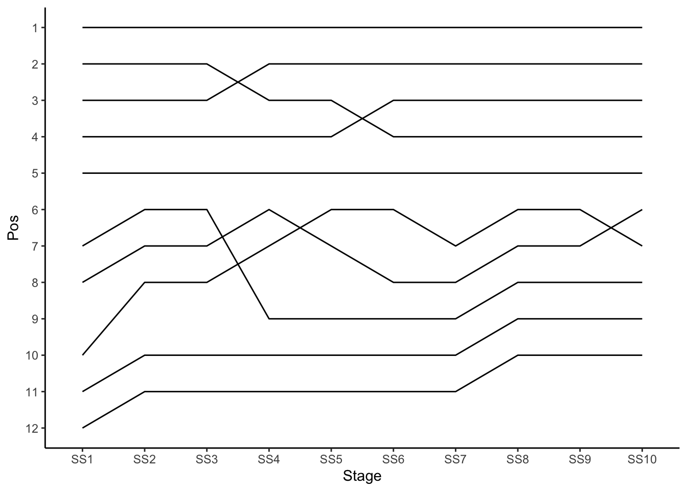
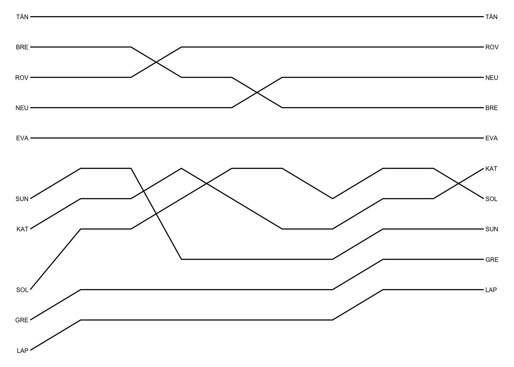

4 Visualising Results for Multiple Stages
As well as visualising the results for a single stage, we might want to visualise the results over multiple stages. The basic overall results can be retrieved from a single call to the WRC results API, but to view the stage times and rankings across multiple stages requires retrieving detailed for each stage and then combining it into a single dataframe.
4.1 Load Base Data
To get the splits data from a standing start, we can load in the current season list, select the rally we want, look up the itinerary from the rally, extract the sections and then the stages and the retrieve the stage ID for the stage we are interested in.
To begin with, load in our WRC API helper functions:
source('code/wrc-api.R')Now let’s grab some data:
s = get_active_season()
eventId = get_eventId_from_name(s, 'arctic')
entries = get_rally_entries(eventId)
itinerary = get_itinerary(eventId)
sections = get_sections(itinerary)
stages = get_stages(sections)
stages_lookup = get_stages_lookup(stages)
stage_list = get_stage_list(stages)
stage_codes = stages$code
# To generate stage codes as an ordered factor:
# factor(stages$code, levels = stages$code)4.2 Retrieving Stage Results for Multiple Stages
To being with, lets get the overall results at the end of each stage:
multi_overall_results = get_multi_overall(stage_list)
multi_overall_results %>% tail(2)## entryId stageTimeMs stageTime penaltyTimeMs penaltyTime totalTimeMs
## 530 21542 11203500 PT3H6M43.5S 0 PT0S 11203500
## 531 21569 11754200 PT3H15M54.2S 0 PT0S 11754200
## totalTime position diffFirstMs diffFirst diffPrevMs diffPrev stageId
## 530 PT3H6M43.5S 51 3773900 PT1H2M53.9S 696500 PT11M36.5S 1749
## 531 PT3H15M54.2S 52 4324600 PT1H12M4.6S 550700 PT9M10.7S 17494.2.1 Widening Overall Position
We can reduce the amount of data by casting the long raw result to a wide format, widening the data on a particular field of interest. For example, we can widen generate a wide dataframe describing overall positions, \({_S}o\) at the end of each stage, where a particular driver’s position is given as \({_S}o_i\):
multi_overall_wide_pos = multi_overall_results %>%
get_multi_stage_generic_wide(stage_list,
'position')## Note: Using an external vector in selections is ambiguous.
## ℹ Use `all_of(group_key)` instead of `group_key` to silence this message.
## ℹ See <https://tidyselect.r-lib.org/reference/faq-external-vector.html>.
## This message is displayed once per session.multi_overall_wide_pos %>% head(2)## entryId 1747 1743 1750 1751 1748 1745 1744 1742 1746 1749
## 1 21530 9 9 9 8 8 7 6 22 20 20
## 2 21531 5 5 5 5 5 5 5 5 5 54.2.2 Widening Overall Rally Time
We can also create a wide format report of the overall times, where each column gives the overall, accumulated rally time up to and including each stage, \({_S}T\); each cell then represents the accumulated time for a particular driver, \({_S}T_i\).
The times themeselves appear in units of milliseconds, so first create a column corresponding to time in seconds, then widen using those values:
multi_overall_results = multi_overall_results %>%
mutate(totalTimeS = totalTimeMs/1000)
multi_overall_wide_time = multi_overall_results %>%
get_multi_stage_generic_wide(stage_list,
'totalTimeS')
multi_overall_wide_time %>% head(2)## entryId 1747 1743 1750 1751 1748 1745 1744 1742 1746 1749
## 1 21530 980.5 1960.5 2802.5 3351.0 4102.2 4955.9 5512.6 6876.6 7491.6 8095.8
## 2 21531 974.5 1942.7 2788.5 3335.1 4085.3 4938.9 5491.5 6275.6 6883.1 7491.1We note that with stages presented in order, the rally time is strictly increasing across the rows.
We further note that we can derive stage times from the overall rally times by calculating the columnwise differences \({_S}t={_S}T-{_{S-1}}T: 1<S<N\) for an \(N\) stage rally.
4.2.3 Widening Time to First
Another useful time is the time to first, which is to say, the gap, \({_S}GAP_i\). Noting that the overall rally leader may change at the end of each stage, this measure is essentially a rebasing measure relative to a particular position rather than a particular driver:
multi_overall_results = multi_overall_results %>%
mutate(diffFirstS = diffFirstMs/1000)
multi_overall_wide_gap = multi_overall_results %>%
get_multi_stage_generic_wide(stage_list,
'diffFirstS')
multi_overall_wide_gap %>% head(2)## entryId 1747 1743 1750 1751 1748 1745 1744 1742 1746 1749
## 1 21530 22.7 49.8 57.3 53.1 54.2 70.6 76.8 664.5 666.1 666.2
## 2 21531 16.7 32.0 43.3 37.2 37.3 53.6 55.7 63.5 57.6 61.5However, we could also calculate the gap to leader from the overall times, first by identifying the minimum accumulated time at each stage (that is, the minimum time, excluding null values, in each overall time column) and then by subtracting those values from each row in the overall times dataframe, which is to say:
\[ \textrm{GAP}_{i} = {_S}t_i - \textrm{min}({_S}T) \]
If we try to subtract a list of values (for example, \(\forall s \in [1 \le S \le N]: \textrm{min}({_S}T)\)) from an R dataframe, we need to tell R how we want that subtraction performed. Internally, the dataframe is represented as a long list of values made up from values in the first column, then the second, and so on. If we subtract a list of N values from the dataframe, the values are selected from the first N items in this long serialised version of the dataframe, then the next N values and so on.
So to subtract a “dummy” row of values from the dataframe, we need another approach. The purrr::map2df() function allows us to apply a function, in this case the subtraction - function, with a set of specified values we want to subtract, from each row in the dataframe.
So let’s create a set of values representing the minimum overall time in each stage. The matrixStats::colMins() function will find the minimum values by row from a matrix, so cast the stage time columns from the wide dataframe to an appropriately sized matrix and then find the minimum in each column, ignoring null values:
overall_m = as.matrix(multi_overall_wide_time[,as.character(stage_list)],
ncols=length(stage_list))
mins_overall = matrixStats::colMins(overall_m, na.rm=TRUE)
mins_overall## [1] 957.8 1910.7 2745.2 3297.9 4048.0 4885.3 5435.8 6212.1 6825.5 7429.6We can now subtract this “dummy row” of values from each row in the dataframe to find the gap to leader for each row on each stage:
purrr::map2_df(multi_overall_wide_time[,as.character(stage_list)],
mins_overall, `-`) %>% head(2)## # A tibble: 2 x 10
## `1747` `1743` `1750` `1751` `1748` `1745` `1744` `1742` `1746` `1749`
## <dbl> <dbl> <dbl> <dbl> <dbl> <dbl> <dbl> <dbl> <dbl> <dbl>
## 1 22.7 49.8 57.3 53.1 54.2 70.6 76.8 664. 666. 666.
## 2 16.7 32 43.3 37.2 37.3 53.6 55.7 63.5 57.6 61.5Comparison with the “diffToFirst” times should show them to be the same.
4.2.4 Mapping Stage and Driver Identifiers to Meaningful Labels
To improve the look of the table, we might use stage codes and driver codes to label the columns and identify the rows.
To start with, we can map the column names that correspond to stage codes via a lookup list of stage ID to stage code values:
map_stage_codes = function(df, stage_list) {
# Get stage codes lookup id->code
stages_lookup_code = get_stages_lookup(stages, 'stageId', 'code')
#https://stackoverflow.com/a/34299333/454773
plyr::rename(df, replace = stages_lookup_code,
warn_missing = FALSE)
}
multi_overall_wide_time = multi_overall_wide_time %>%
map_stage_codes(stage_list)
multi_overall_wide_time %>% head(2)## entryId SS1 SS2 SS3 SS4 SS5 SS6 SS7 SS8 SS9 SS10
## 1 21530 980.5 1960.5 2802.5 3351.0 4102.2 4955.9 5512.6 6876.6 7491.6 8095.8
## 2 21531 974.5 1942.7 2788.5 3335.1 4085.3 4938.9 5491.5 6275.6 6883.1 7491.1We can also create a function to replace the entry ID with the driver code. Note also the select statement at the end that puts the columns into a sensible order:
cars = get_car_data(entries)
map_driver_names = function(df, cars){
df %>%
merge(cars[,c('entryId','code')],
by='entryId') %>%
# Limit columns and set column order
select(-'entryId') %>%
# Move last column to first
select('code', everything())
}
multi_overall_wide_time = multi_overall_wide_time %>%
map_driver_names(cars)
multi_overall_wide_time %>% head(2)## code SS1 SS2 SS3 SS4 SS5 SS6 SS7 SS8 SS9 SS10
## 1 OGI 980.5 1960.5 2802.5 3351.0 4102.2 4955.9 5512.6 6876.6 7491.6 8095.8
## 2 EVA 974.5 1942.7 2788.5 3335.1 4085.3 4938.9 5491.5 6275.6 6883.1 7491.14.2.5 Rebasing Overall Times
We can rebase the overall times with respect to a particular driver in the normal way:
example_driver = multi_overall_wide_time[2,]$code
overall_wide_time_rebased = rebase(multi_overall_wide_time,
example_driver, stage_codes,
id_col='code')
overall_wide_time_rebased %>% head(3)## code SS1 SS2 SS3 SS4 SS5 SS6 SS7 SS8 SS9 SS10
## 1 OGI 6.0 17.8 14.0 15.9 16.9 17.0 21.1 601.0 608.5 604.7
## 2 EVA 0.0 0.0 0.0 0.0 0.0 0.0 0.0 0.0 0.0 0.0
## 3 NEU -4.3 -2.2 -12.5 -8.0 -2.6 -18.7 -17.5 -37.6 -36.5 -41.74.2.6 Finding Changes in Rebased Gaps Across Stages
The rebasing operation essentially allows us to select a row of times for one particular driver and then subtract that row from every other row to give us a direct comparison of the gap between a specified driver and every other driver.
But we can also perform a consecutive column-wise differencing operation on the rebased times that allows to see how much time was gained or relative to a particular driver in going from one stage to the next (observant readers may note that this results in the rebased stage time for each stage…).
To subtract one column from the next, create two offset dataframes, one containing all but the first stage (first stage column) and one containing all but the last stage (final stage column). If we subtract one dataframe from the other, it gives us our column differences. Inserting the original first column back in its rightful place gives us the columnwise differences table:
#https://stackoverflow.com/a/50411529/454773
df = overall_wide_time_rebased
# [-1] drops the first column, [-ncol()] drops the last
df_ = df[,stage_codes][-1] - df[,stage_codes][-ncol(df[,stage_codes])]
# The split time to the first split is simply the first split time
df_[stage_codes[1]] = df[stage_codes[1]]
# Return the dataframe in a sensible column order
df_ %>% select(stage_codes) %>% head(3)## Note: Using an external vector in selections is ambiguous.
## ℹ Use `all_of(stage_codes)` instead of `stage_codes` to silence this message.
## ℹ See <https://tidyselect.r-lib.org/reference/faq-external-vector.html>.
## This message is displayed once per session.## SS1 SS2 SS3 SS4 SS5 SS6 SS7 SS8 SS9 SS10
## 1 6.0 11.8 -3.8 1.9 1.0 0.1 4.1 579.9 7.5 -3.8
## 2 0.0 0.0 0.0 0.0 0.0 0.0 0.0 0.0 0.0 0.0
## 3 -4.3 2.1 -10.3 4.5 5.4 -16.1 1.2 -20.1 1.1 -5.2(A similar technique could be used to recreate stage times from the overall times.)
4.3 Visualising Multiple Stage Results
The overall stage results provides information regarding the overall times and positions at the end of each stage; the rebased overall times provide us with gap information from a specified driver to every other driver.
So how might we use exploratory data visualisation techniques to support a conversation with that data or highlight potential stories hidden within it?
4.3.1 Visualising First Position
One way of enriching the wide position table might be to highlight the driver in first position at the end of each stage. We can do this using the formattable::formattable() function.
First, let’s tidy up the overall position table:
multi_overall_wide_pos = multi_overall_wide_pos %>%
map_stage_codes(stage_codes) %>%
map_driver_names(cars)
multi_overall_wide_pos %>% head(2)## code SS1 SS2 SS3 SS4 SS5 SS6 SS7 SS8 SS9 SS10
## 1 OGI 9 9 9 8 8 7 6 22 20 20
## 2 EVA 5 5 5 5 5 5 5 5 5 5We can also reorder the table by the final stage position, as described by the last stage code in the stage_codes list. However, because we want to sort on a column name as provided by a variable, we need to use the !! operator to force the evaluation of the single variable value to the column name symbol (as.symbol()):
multi_overall_wide_pos = multi_overall_wide_pos %>%
dplyr::arrange(!!as.symbol(stage_codes[length(stage_codes)]))
multi_overall_wide_pos %>% head(2)## code SS1 SS2 SS3 SS4 SS5 SS6 SS7 SS8 SS9 SS10
## 1 TÄN 1 1 1 1 1 1 1 1 1 1
## 2 ROV 3 3 3 2 2 2 2 2 2 2Create a function to highlight the first position car:
library(formattable)
highlight_first = function (...)
{
formatter("span",
style = function(x) ifelse(x==1,
style(display = "block",
padding = "0 4px",
`color` = "white",
`column-width`='4em',
`border-radius` = "4px",
`background-color` = 'mediumorchid'),
style()))
}And then use that function to help style the table:
multi_overall_wide_pos %>%
head(3) %>%
formattable(# Align values in the center of each column
align='c',
list(area(col = stage_codes) ~ highlight_first()))| code | SS1 | SS2 | SS3 | SS4 | SS5 | SS6 | SS7 | SS8 | SS9 | SS10 |
|---|---|---|---|---|---|---|---|---|---|---|
| TÄN | 1 | 1 | 1 | 1 | 1 | 1 | 1 | 1 | 1 | 1 |
| ROV | 3 | 3 | 3 | 2 | 2 | 2 | 2 | 2 | 2 | 2 |
| NEU | 4 | 4 | 4 | 4 | 4 | 3 | 3 | 3 | 3 | 3 |
4.3.2 Visualising Position Changes Over a Rally
Another useful way of summarising the positions is to chart showing the evolution of position changes.
The chart is cosntructed ost straightforwardly from tidy long format) data:
overall_pos_long_top10 <- multi_overall_wide_pos %>%
head(10) %>%
gather(key ="Stage",
value ="Pos",
stage_codes)
overall_pos_long_top10 %>% head(3)## code Stage Pos
## 1 TÄN SS1 1
## 2 ROV SS1 3
## 3 NEU SS1 4It will be convenient for the stage codes to be represented as ordered factors:
overall_pos_long_top10 = overall_pos_long_top10 %>%
mutate(Stage = factor(Stage,
levels = stage_codes))
overall_pos_long_top10$Stage[1]## [1] SS1
## Levels: SS1 SS2 SS3 SS4 SS5 SS6 SS7 SS8 SS9 SS10library(ggplot2)
pos_range = 1:max(overall_pos_long_top10$Pos)
g_pos = ggplot(overall_pos_long_top10, aes(x=Stage, y=Pos)) +
geom_line(aes(group = code)) +
# Invert scale and relabel y-axis
# https://stackoverflow.com/a/28392170/454773
scale_y_continuous(trans = "reverse",
breaks = pos_range) +
theme_classic()
g_pos
We can producing a cleaner chart by adding driver labels to the start and end of each line using the directlabels:geom_dl() function, as well as dropping the axes:
library(directlabels)
g_pos +
geom_dl(aes(label = paste0(' ',code)), # Add space before label
# cex is text label size
method = list('last.bumpup', cex = 0.5)) +
geom_dl(aes(label = paste0(code, ' ')), # Add space before label
method = list('first.points', cex = 0.5)) +
theme_void()
In the above chart, you may notice a gap at first stage position 6 where Ogier was originally placed. A more robust way to prepare the data for this sort of charts is to filter the data by class, for example limiting the data to cars in the WRC group/class, and then reranking the position by group/class. A finished position chart can then position the drivers by class ranking and use lables to overplot actual overall rally positions on stages where the overall stage position differs from the class rank.
4.3.3 Visualising Position Gains/Losses
To visualise position changes for a driver from one driver to the next, we can create a table of position differences. Let’s abstract out the code we used to find differnces between columns in to a function:
coldiffs = function(df, cols, dropfirst=FALSE, firstcol=NULL){
cols = as.character(cols)
# [-1] drops the first column, [-ncol()] drops the last
df_ = df[,cols][-1] - df[,cols][-ncol(df[,cols])]
# The split time to the first split is simply the first split time
df_[cols[1]] = df[cols[1]]
# Return the dataframe in a sensible column order
df_ = df_ %>% select(cols)
if (!is.null(firstcol))
df_[, cols[1]] = firstcol
if (dropfirst)
df_[,cols][-1]
else
df_
}Let’s put that function through its paces. First, we can drop the first column:
coldiffs(multi_overall_wide_pos, stage_codes, dropfirst=TRUE) %>% head(2)## Note: Using an external vector in selections is ambiguous.
## ℹ Use `all_of(cols)` instead of `cols` to silence this message.
## ℹ See <https://tidyselect.r-lib.org/reference/faq-external-vector.html>.
## This message is displayed once per session.## SS2 SS3 SS4 SS5 SS6 SS7 SS8 SS9 SS10
## 1 0 0 0 0 0 0 0 0 0
## 2 0 0 -1 0 0 0 0 0 0Then we can retain the first column and replace it with a specified value:
coldiffs(multi_overall_wide_pos, stage_codes, firstcol=999) %>% head(2)## SS1 SS2 SS3 SS4 SS5 SS6 SS7 SS8 SS9 SS10
## 1 999 0 0 0 0 0 0 0 0 0
## 2 999 0 0 -1 0 0 0 0 0 0We can now fund the position changes from stage to stage as well as tidying up the identifiers:
pos_diffs = coldiffs(multi_overall_wide_pos, stage_codes,
firstcol=0)
pos_diffs$code = multi_overall_wide_pos$code
# Reorder the columns by moving last column to first
pos_diffs = pos_diffs %>% select('code', everything())
pos_diffs %>% head(3)## code SS1 SS2 SS3 SS4 SS5 SS6 SS7 SS8 SS9 SS10
## 1 TÄN 0 0 0 0 0 0 0 0 0 0
## 2 ROV 0 0 0 -1 0 0 0 0 0 0
## 3 NEU 0 0 0 0 0 -1 0 0 0 0Nte that we need to be careful with the sense of how we read this table: a negative position change means the driver has improved their position. It might be more meaningful to have position gain/loss, rather than strict position difference columns, where a positive value denotes an improved position:
pos_gains = pos_diffs
pos_gains[,stage_codes] = -pos_gains[,stage_codes[-1]]
pos_gains %>% head(3)## code SS1 SS2 SS3 SS4 SS5 SS6 SS7 SS8 SS9 SS10
## 1 TÄN 0 0 0 0 0 0 0 0 0 0
## 2 ROV 0 0 1 0 0 0 0 0 0 0
## 3 NEU 0 0 0 0 1 0 0 0 0 0One way of highlighting position changes is to use coloured up/down arrows:
updown = function(...){
formatter("span",
style = function(x) style(color = ifelse(x>0,
"green",
ifelse(x<0,
"red",
"lightgrey"))),
function(x) icontext(ifelse (x >0,
# i.e. gained position
"arrow-up",
ifelse (x < 0,
"arrow-down" ,
"resize-horizontal"))))
}Let’s see how that works (note that we need to cast the table as.htmlwidget() in order to render the arrows appropriately :
pos_gains %>%
head(3) %>%
formattable(list(
area(col = stage_codes) ~ updown())) %>%
as.htmlwidget()We can extend the formatter to also display the number of positions gained or lost:
updown2 = function(...){
formatter("span",
style = function(x) style(color = ifelse(x>0,
"green",
ifelse(x<0,
"red",
"lightgrey"))),
function(x) icontext(ifelse (x >0,
# i.e. gained position
"arrow-up",
ifelse (x < 0,
"arrow-down" ,
"resize-horizontal")),
# Add in the pos change value
ifelse (x!=0, paste0('(',abs(x),')'),'')))
}Let’s see how it looks:
pos_gains %>%
head(3) %>%
formattable(list(
area(col = stage_codes) ~ updown2())) %>%
as.htmlwidget()Another way of visualising position changes is to create a simple summarising sparkline using the sparkline::spk_chr() function.
This requires us first to cast the data into a long format:
pos_gain_long_top10 <- pos_gains %>%
head(10) %>%
gather(key ="Stage",
value ="PosChange",
stage_codes)
pos_gain_long_top10 %>% head(3)## code Stage PosChange
## 1 TÄN SS1 0
## 2 ROV SS1 0
## 3 NEU SS1 0We can then generate sparklines showing position changes:
library(sparkline)
pos_gain_sparkline_top10 <- pos_gain_long_top10 %>%
group_by(code) %>%
summarize(spk_ = spk_chr(PosChange,
type ="bar"))
# We need to create an htmlwidget form of the table
out = as.htmlwidget(formattable(pos_gain_sparkline_top10))
# The table also has a requirement on the sparkline package
out$dependencies = c(out$dependencies,
htmlwidgets:::widget_dependencies("sparkline",
"sparkline"))
outNote that to render the sparkline, we need to cast the formatted table to an htmlwidget* and also ensure that the required sparkline Javascript package is loaded into the widget.*
One issue with the sparkline bars is that the scales may differ. For example, across different drivers, a position change of +1 for one driver may have the same height as a position chane of +2 for another driver.
4.4 Retrieving Stage Time for Multiple Stages
This far, we have focused on exploring the overall results data. If required, we can also retrieve detailed results for multiple stages by requesting stage results for a specified list of stages:
multi_stage_times = get_multi_stage_times(stage_list)
multi_stage_times %>% tail(2)## stageTimeId stageId entryId elapsedDurationMs elapsedDuration status
## 539 96810 1749 21571 1301693 00:21:41.6930000 Completed
## 540 96793 1749 21541 NA <NA> DNS
## source position diffFirstMs diffFirst diffPrevMs diffPrev
## 539 Default 52 699224 00:11:39.2240000 153590 00:02:33.5900000
## 540 Default NA NA <NA> NA <NA>We can then cast the data to a wide format:
multi_stage_times_wide = get_multi_stage_times_wide(multi_stage_times, stage_list)
multi_stage_times_wide %>% head(2)## entryId 1747 1743 1750 1751 1748 1745 1744 1742 1746 1749
## 1 21530 980.5 980.0 842.0 548.5 751.2 853.7 556.7 1364.0 615.0 604.272
## 2 21531 974.5 968.2 845.8 546.6 750.2 853.6 552.6 784.1 607.5 608.028And process:
multi_stage_times_wide= map_stage_codes(multi_stage_times_wide,
stage_list)